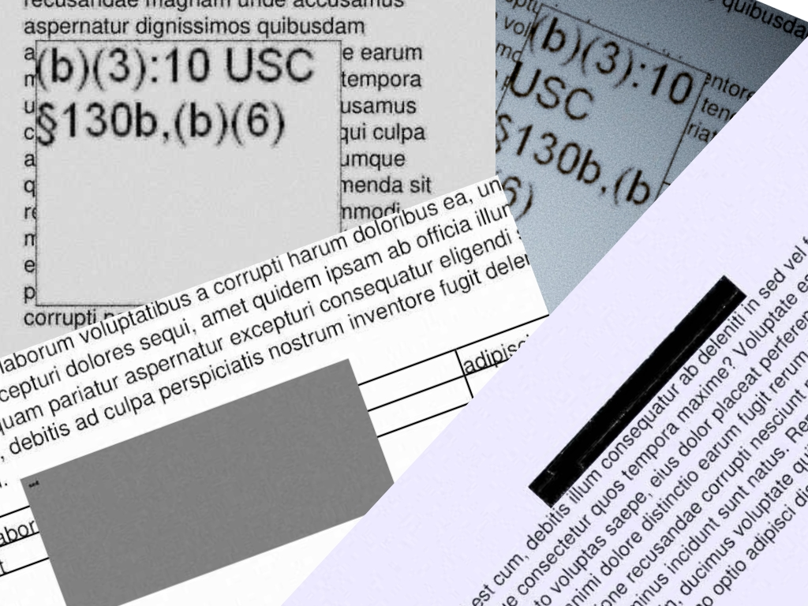
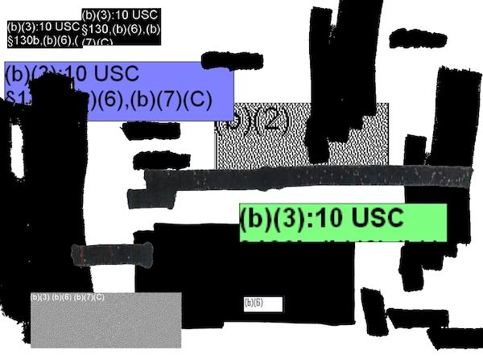
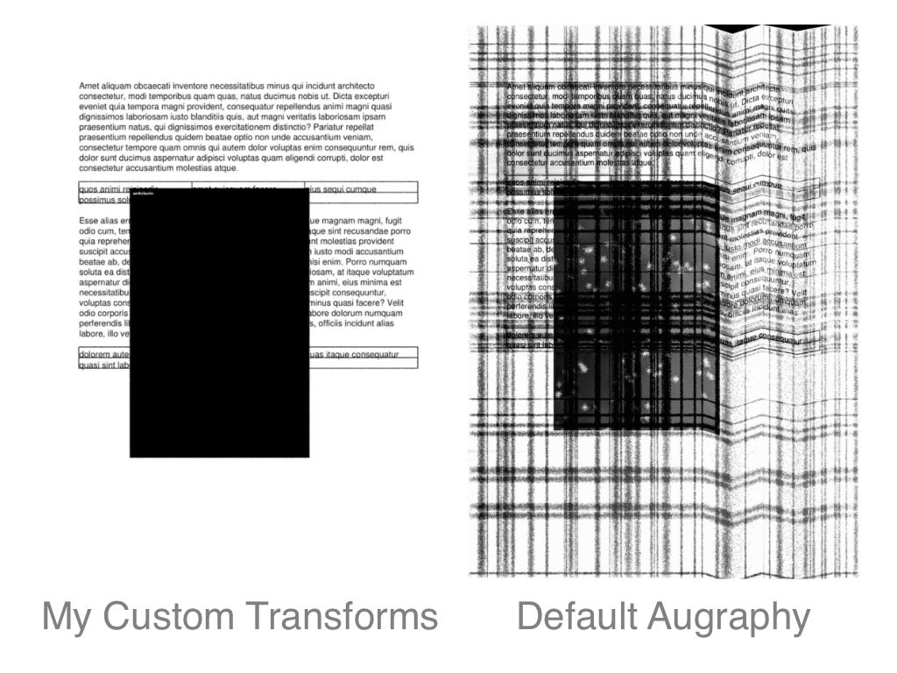
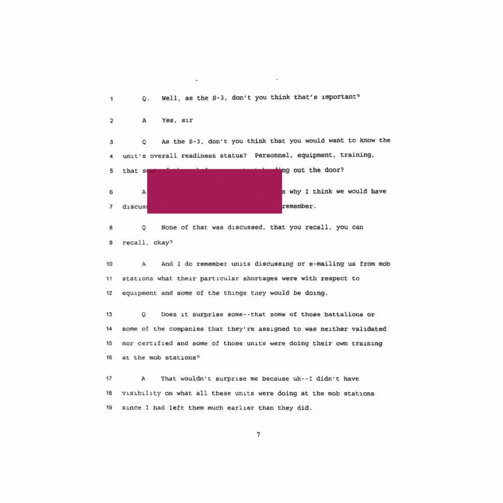

This blog outlines my process (and a few false starts) for generating a series of synthetic images (and corresponding annotations) to supplement training data used in a machine learning project. This problem is one for which there aren’t many (any?) pre-existing data sets that I can repurpose so I’ve been trying to find ways to bootstrap and improve the performance of the model I’m training.
Before I dive into the details, I wanted to include a little context on the wider project and what I’m seeking to accomplish. It is a relatively common practice for documents released as part of FOIA requests to contain redactions. With so many documents being released — and perhaps in specific cases where legal teams are dealing with huge numbers of those redacted documents — it can be useful to identify which documents are redacted and/or to get a sense of just how much has been redacted. If you have 10 or 20 documents you can fairly easily get that overview, but if you have 10,000 or a million documents? That’s where my project comes in: I want to train a model to make it easy to detect redactions in a document and to generate statistics on what proportion of a document or documents have been redacted.
You can read more about the problem domain, about my initial forays into annotating a dataset for this problem, as well as view some examples of these redactions (and perhaps why they’re not as easy to identify as you might think). You can even try out a demo showing some of what the model can identify here. Note that this isn’t the latest version of the model so it’s not the absolute best performance.
What’s the deal with synthetic images?
It’s a truism that in computer vision projects you probably need or want a lot of data to get good results. For the Facebooks and Bytedances of the world this perhaps isn’t an issue: they have access to a ton of data, for better or for worse. But for me, I don’t have teams of data annotators or millions of users generating all this data. This is probably the norm for small- to medium-sized computer vision problems being solved out in the world, especially with more non-traditional entrants into the field who are just trying to do things with the skills instead of generating research and so on.
Instead of using huge amounts of data, we need to be smarter about how we work, levelling ourselves up with whatever tricks of the trade we can muster. The fastai course contains a great number of these best practices, perhaps unsurprisingly since it is in some way targeted at individuals seeking to solve their domain-specific problems. One of the key insights I took away from earlier parts of the fastai book was the benefits of using pre-trained models. With a wealth of these models available and accessible, you don’t need to start your work from scratch. Instead, fine-tune your model and benefit from the expertise and hard work of others.
You do need some data to get started with fine-tuning a pre-trained model, however. That’s why I took a bit of time to make some initial annotations. I currently have annotated 2097 images, labelling where I have found redactions on the images as well as a box to show which parts of the image contain text or content. That approach has done pretty well so far, with in the low to mid seventies in terms of a % COCO score. (This is a commonly-used metric to assess the performance for object detection problems.) I want to go further, though, which is where synthetic images come in.
The big bottleneck in the annotation process is, of course, me. Depending on how many redactions any particular image contains, it could take me 5-10 minutes for a single image’s worth of annotations. This does not scale. Part of the speedup for this process is to use self-training, but I’ll write about that separately. Another option that has is often used is to generate images which approximate (to a greater or lesser degree) the actual real images. The useful thing about generating the images yourself is that you know where you placed the redactions, so you have the annotations at the same time.
My overall goal here was to boost my model’s performance. I didn’t know how how well these synthetic images would contribute, or even if they’d contribute to any boost at all. I was also quite conscious of the fact that you could probably spend a year generating pixel-perfect synthetic redacted documents. I didn’t want to waste too much time doing that, so at various points I had to make decisions as to whether a particular stage was good enough.
Phase 1: Get a Baseline / Naive Trial
When I started this, I didn’t know how hard or easy it was going to be, so I set myself a low bar. I knew it was theoretically possible to create images with Python, but I’d never done it before so didn’t have a sense of the range of possibilities.
In situations like this, I find Jupyter notebooks really reveal their strengths. Experimentation is easy and the pace of iteration can be really high. A few minutes of searching around and it seemed like Pillow (aka ‘PIL’) was probably the best option to go with. I noted that you could edit, resize, copy and paste images. For my basic version of a synthetic image generator, that’s most of what I needed to do:
- Take an image that we know contains no redactions.
- Get a separate image file that is of a redaction box / squiggle or shape.
- Randomly resize the redaction shape.
- Paste the redaction shape at a random location on top of the base unredacted image.
And voila! Finding unredacted images was easy since I had previously used fastai to build a model that could detect to ~95% accuracy whether an image contained a redaction or not. For the redactions, it took me about an hour with Pixelmator Pro and its ‘quick selection’ tool to extract 100 examples of various kinds of redaction that I knew were commonly found in the data set. You can see some of this variety in the illustration that follows, though note that each individual redaction snippet was its own separate image for the purposes of my synthetic generation.

I found that it was pretty trivial to generate images of the kind I proposed above. The placement of the redactions didn’t always make sense, and sometimes the random resize that the redaction underwent meant that it was either far too small or far too large. I also hadn’t included any steps to capture the annotation in this prototype, but I knew it was possible so continued onwards.
Detour: Get Stuck Pretty Quickly, Experience bbox Sprawl
Buoyed by my success in the prototype stage, I immediately added a bunch of improvements and features to what I wanted to achieve. I knew I wanted to make sure that the redaction stayed within the boundaries of the original base image. I also wanted to ensure that it stayed within the boundaries of the content of the base image — i.e. redactions generally tend to be made on top of content which tends not to be right on the outer margins.
I rushed into things too fast without thinking the problem through and quite quickly got into deep waters as all the various pieces started to overlap. I was somehow still in notebook mode, passing various objects through various other custom libraries, not sure what I was passing where. In short: it was a mess.
One thing that tripped me up really fast was bboxes. (A bbox, in case this means nothing to you, is a data structure or type that allows you to represent where a box is positioned if you were to paste it on top of a base image (for example). It seems that there are different conventions about how to represent this concept of the location of a box on top of some other larger space. Some people represented it with pairs of coordinates, such that for each of the four corners of the box you’d have an [x, y] pair to represent each point. Others took this bbox type to contain references to the xmin, ymin, xmax, and ymax values of the box. In this way you could reconstruct the various corners since you had two opposite corners specified. Another option was that used by COCO, which was [xmin, ymin, width, height]. And yet another option was to represent a bounding box by [x_center, y_center, width, height]. (This is a useful article that details some of these representation differences.)
I’m sure there are people who are really good at keeping multiple types of x and y coordinates, each with slightly different nuances, in their heads. I am not such a person and after an hour or two of struggling in these deep waters I realised I needed to regroup.
My notebook experiments had been good for uncovering the range of possibility, but now that I had a better sense of the edges of the problem — and the twists and turns of dealing with bounding boxes — I had to take a more systematic approach. I spent some time with pen and paper thinking through the flow that this synthetic generation process would have to include. I thought through what the various independent parts of this could be, and how data would flow through this set of steps.
Phase 2: Generate My Own Base Images
The first part of this process was to generate my own base images. In general, the types of base unredacted images in the core data set were relatively unremarkable. These were mostly letters, reports or some kind of form / table. I figured I could approximate this pretty quickly. By chance, that very weekend I happened to listen to an episode of the Real Python podcast which interviewed the creator of borb, a Python package for creating and manipulating PDFs. I knew I wanted images in the end, but I had already created a tool to extract images from PDFs and I figured borb would probably save me time, even if it meant I had to do some converting back and forth between images and PDF files.
The great thing about borb is that it offers an easy abstraction with which to reason about creating PDF documents. Have some text and want it to be displayed on a page? Done. Want that text to be displayed in three columns? Done. Want do insert some images and have the text flow round it? Done. Have styling requirements? Done. And on and on. I figured that this was just the level of abstraction I needed — rather than staying in the world of pixel primitives like lines and boxes.
Once I got going it was easy to generate base images with multi-column text and some random coloured shapes thrown in here and there. (I used lorem-text to generate random Latin texts.) After I created the PDF I then had to convert it into an image format for use elsewhere in the generator pipeline but I think that speed hit was a price worth paying.
Phase 3: Generate My Own Redactions
The redactions weren’t quite as easy as the base images. The easiest version of a redaction box was literally that: a black box that sits on top of the base image. That much was easy to create. Pillow had some useful interfaces that I could use to quickly create randomly sized boxes. I could even add text to them in the upper left corner as I’d noticed that many of the real redactions did that.
It was less clear to me how I’d go about generating the other kinds of redactions, particularly ones that resembled a handwritten mark in thick black marker over the top of a document. In the end, I decided not to go any further with anything that wasn’t a box, but I did make the redaction boxes more varied. I set it such that the box would be filled with a random colour. If the colour was dark enough, I made sure that the text was in a light (contrasting) colour. And ensure that there wasn’t always a text on the box.
Not perfect, but still it gave me a way to move forward.
The Big Picture: Bringing It All Together
With these pieces complete, I had the basics of the next version of my synthetic image generation. You can see the flow and progression of my script in the following diagram:

You’ll note that there were a number of other steps that supported the image creation. I did again descend into bbox hell when calculating exactly where to paste the redaction image, but with a much more modularised approach to my code I didn’t get lost. Type hints also kept me honest about what variables I was passing in and out of the functions I’d created.
I ended up using the initial model I’d trained so far in the step that figured out where the content of the image was. You’ll recall that this was one of the annotations I’d already been generating when I annotated my data, and since it’s a fairly simple computer vision task I was already seeing excellent performance from that specific class in object detection. IceVision, a library that I’m using for the computer vision and deep learning parts of this project, allowed me to fairly easily make this inference on the images and extract the bbox coordinates for the content box.
I made sure to include a lot of random variation in the first two steps where the base and redaction images were created. I didn’t remove the original naive approach completely. Instead, I made it 50% likely that we’d generate an image versus just picking one of the unredacted images from our store. Then I gave the same chance for the redaction as to whether we’d use an actual redaction snippet or one of the computer-generated boxes. There was lots of resizing and colouring and various other randomisation that was also included.
Phase 5: Make The Images Look Old and Worn
Only one step remained. I realised that when I generated the images completely from scratch, not using any of the real base images or redaction snippets, that they looked very new and unrealistic. A significant proportion of the documents in the collection looked like they’d been photocopied a thousand times and in general had seen better days. Sometimes the quality was such to make them unreadable. I realised if I was going to get good results with the overall goal (i.e. improve my model’s performance) I’d have to make the synthetic creations look old somehow.
After some exploration I settled on augraphy as how I’d process the newly generated images to look old and worn. Luckily for me, this package seems to have been created explicitly to support machine learning workflows for synthetic data creation, and it seemed to be (somewhat) actively maintained. There was a default set of so-called ‘augmentations’ that Augraphy suggested I apply to my image. Unfortunately it was simply too aggressive. I guess for some workflows it would have been great, but the page ended up looking somewhat unintelligible by the end. Compare these two examples:

Not only did the default Augraphy transforms often make the redaction indistinguishable, it shifted parts of the image around on the page for these crinkle and scrunch effects, which would have rendered my annotations inaccurate.
That said, as you can see from the left image, it was pretty easy to switch out the default for a set of random transforms to be applied that wasn’t quite so aggressive. I’m thankful that tools like this exist out in the open-source space and that allow me to get on with the work of solving the actual problem I’m interested in working on.
Final Results: 2097 Synthetic Images

This gif gives you a brief sense of some of the images I generated as a result of the process I’ve detailed above. They’re not perfect, and as I write I currently don’t know how well they will perform when training my model.
I have 2097 real annotated images, so I’m going to combine them with a maximum of an equal number of synthetic images. I’ll try out different proportions of real to synthetic, but that’s also a topic for another blogpost to follow. Stay tuned!
It took about three and a half hours to create these 2000+ images on my laptop. There are LOTS of places where I could have made speed improvements, notably all the conversion between PDF and image objects, the inference for the content box and also the fact that the pipeline wasn’t performed in parallel on all my CPU cores. I spent about 30 minutes exploring Ray as a means to getting this process to be executed in parallel but it ended up being not as simple as I’d initially thought so I’ve left that to one side for now. In any case, I won’t be creating so many synthetic images at once so often, so it wasn’t a real blocking point for my work.
Note, too, that the annotations get created as part of the same script. I append them to a synthetic annotations file at the same time as the synthetic images is generated, and the file is subject to being combined with the real annotations at a later stage.
There are obviously lots of ways this synthetic data creation process could be optimised, but I was recently reminded that it’s also important not to lose momentum and not to let the perfect be the enemy of the good.
The next step is to carry out an experiment to see the effect of adding in the synthetic annotations on model performance. There are a bunch of really tricky aspects to this (most notably finding ways to make sure not to allow my training data to leak into the validation data) but I’ll save all that for my next blogpost.
(If you got all the way to the end, well done!)